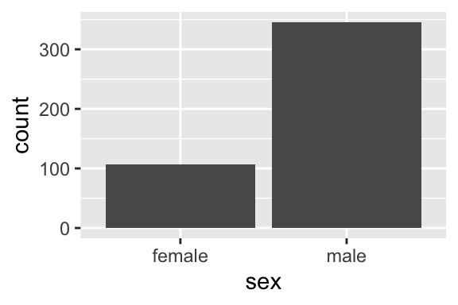
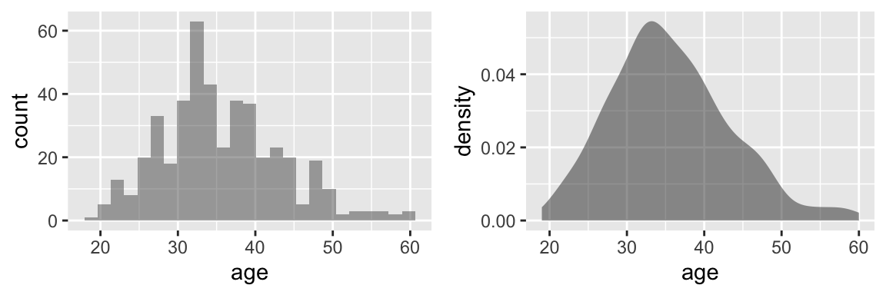
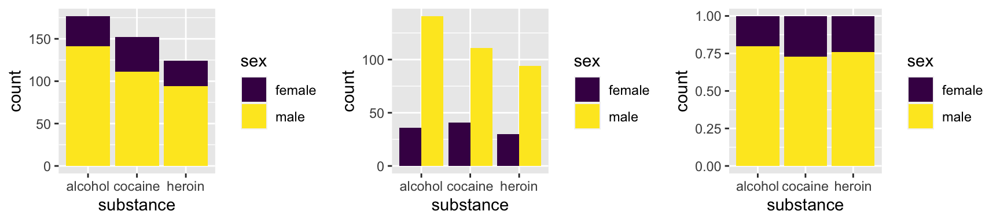
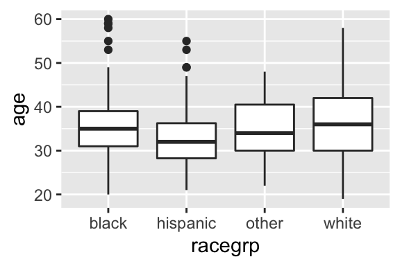
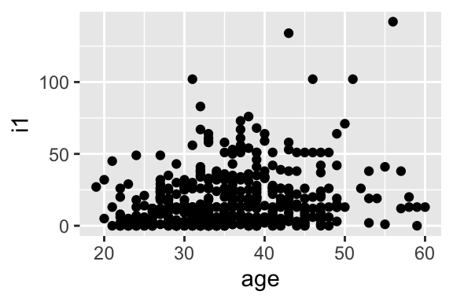

1:10 [1] 1 2 3 4 5 6 7 8 9 10In this course we will work with R Markdown files in class.
Try executing this chunk by clicking the Run button within the chunk or by placing your cursor inside it and pressing Cmd/Cntrl+Shift+Enter.
1:10 [1] 1 2 3 4 5 6 7 8 9 10Add a new chunk by clicking the Insert Chunk button on the toolbar or by pressing Cmd/Cntrl+Option+I.
When you save your work, a file containing the code and output will be saved alongside it (click the Knit button or press Cmd+Shift+K to preview the PDF file; you may need to change the output type to HTML or Word if you don’t have LaTeX installed on your computer).
While you are learning the R language, remember that you are learning a new language; thus, we will start rather simply with small analysis tasks and build up to more complicated tasks. Also, you will not remember everything immediately—that’s OK, it’s a natural part of learning a language!
R does not enable all of its functionality when you open it. To enable additional functionality we need to load R packages. In this class, we will often use the dplyr R package to enable better tools for data manipulation and the ggformula package to enable better tools for plotting. Below is an example of installation and loading:
# You only need to install a package once
# If you use the server, then these packages are already installed
install.packages("dplyr")
install.packages("ggformula")# You will need to load the package in each R markdown notebook
library(dplyr)
library(ggformula)Note: I added the message = FALSE argument to this code chunk to avoid unnecessary messages
Additionally, if you are using your own computer and do not have LaTeX installed, then you can run the following command in the console to install a LaTeX distribution so that you can knit your R Markdown files to PDF.
install.packages('tinytex')
tinytex::install_tinytex()Regression models are fit to data sets, so data will play a central role in this course. There are multiple ways to load data sets (and we’ll learn more about them later), but we often need to load a .csv (comma separated value) file.
Today, we’ll look at a data set containing information on health evaluation and linkage to primary care.
# Load the data and assign it a name
HELPrct <- read.csv("https://aloy.rbind.io/data/HELPrct.csv")The HELPrct object is our first example of a data frame, which is essentially a list of vectors. We can get a first glimpse of our data set in a few ways:
# Printing the first 6 rows
# Note that missing values are denoted by NA
head(HELPrct)# Looking at the number of rows and columns
dim(HELPrct)# Looking at the structure
str(HELPrct)# Another way to look at the structure
dplyr::glimpse(HELPrct)# looking at quick summary statistics
summary(HELPrct)In this course, we’ll work with data sets that have a combination of quantitative and categorical variables. Oftentimes, an important first step (before doing any analysis) is to explore the data. Here are some plots and summary statistics that are frequently used to visually display the data.
ggformulaThe ggformula package provides a formula interface to the ggplot2 package. I have found this interface easier to learn, allowing you to focus on your analysis.
The basic syntax to create a plot using ggformula is:
goal ( y ~ x, data = mydata, ...)
where
goal: specifies what plot you want to create,y: is the response variable,x: is the explanatory variable, andmydata: is the name of your data setCommon goals (i.e. graph types) include:
Univariate graphics
gf_bar,gf_histogramgf_densityBivariate graphics
gf_bargf_boxplotgf_pointdplyrTo summarize numeric variables across groups, I prefer the tools in dplyr. Why? dplyr…
From your previous statistics course, you may be familiar with the tapply function. For example, the below code calculates the standard deviation of age by sex:
tapply(HELPrct$age, HELPrct$sex, sd) female male
7.584858 7.750110 Here is the analogous dplyr version:
HELPrct %>%
group_by(sex) %>%
summarize(sd = sd(age))# A tibble: 2 × 2
sex sd
<chr> <dbl>
1 female 7.58
2 male 7.75What’s up with the %>%? That is known at the pipe operator and allows us to chain together commands by passing the object on the left side into the first argument of the function on the right. For example, the above code
HELPrct data set, and thensex, and thenage.While this might not seem easier now, it will help as we progress through the course.
table(HELPrct$sex)
female male
107 346 gf_bar(~ sex, data = HELPrct)
summary(HELPrct$age) Min. 1st Qu. Median Mean 3rd Qu. Max.
19.00 30.00 35.00 35.65 40.00 60.00 sd(HELPrct$age)[1] 7.710266gf_histogram(~ age, data = HELPrct)
gf_density(~ age, data = HELPrct)
table(HELPrct$sex, HELPrct$substance)
alcohol cocaine heroin
female 36 41 30
male 141 111 94gf_bar( ~ substance, data = HELPrct, fill = ~sex)
gf_bar( ~ substance, data = HELPrct, fill = ~sex, position = position_dodge())
gf_bar( ~ substance, data = HELPrct, fill = ~sex, position = position_fill())Loading required package: viridisLite
Attaching package: 'viridis'The following object is masked from 'package:scales':
viridis_pal
# Using dplyr
HELPrct %>%
group_by(racegrp) %>%
summarize(min = min(age),
Q1 = quantile(age, prob = .25),
median = median(age),
Q3 = quantile(age, prob = .75),
max = max(age),
mean = mean(age),
sd = sd(age),
n = length(age))# A tibble: 4 × 9
racegrp min Q1 median Q3 max mean sd n
<chr> <int> <dbl> <dbl> <dbl> <int> <dbl> <dbl> <int>
1 black 20 31 35 39 60 35.7 7.08 211
2 hispanic 21 28.2 32 36.2 55 33.2 7.99 50
3 other 22 30 34 40.5 48 35.0 7.66 26
4 white 19 30 36 42 58 36.5 8.28 166gf_boxplot(age ~ racegrp, data = HELPrct)
cor(HELPrct$i1, HELPrct$age)[1] 0.2069538gf_point(i1 ~ age, data = HELPrct)